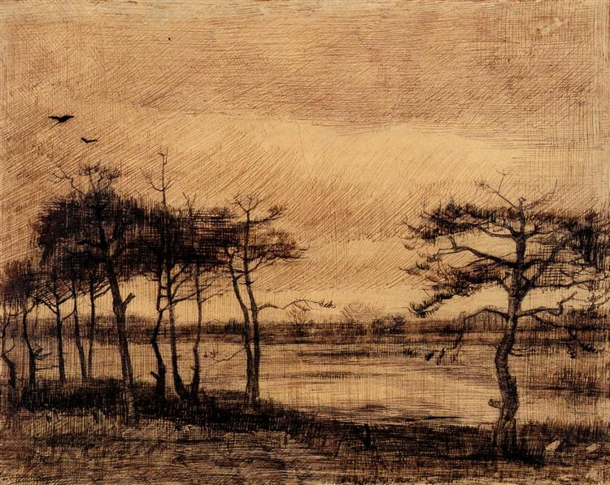

Sample 1
Human: no
Animal: yes
Flower: no
AI-like: no
Classification reason: The image shows a landscape with trees and water, and two birds flying in the top-left sky. The texture is consistent with traditional etching or drawing, showing clear hand-drawn lines and shading. The anatomical structure of the trees and water reflections appears natural and human-made, with no surreal or inconsistent elements typical of AI generation.
AI appearance reason: The image shows consistent hand-drawn texture, naturalistic composition, and realistic elements like birds and trees, indicating it is a traditional human artwork rather than AI-generated.